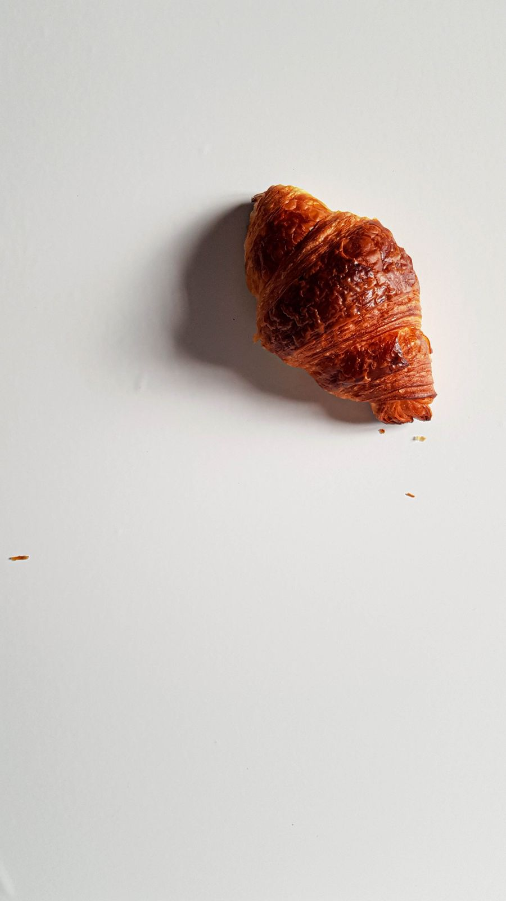

@pasticceriabruna
+39 080555 1234
-15%oggi
Friabile, burroso ebuono da non crederci
Concediti la colazione come si deve. I nostri cornetti escono dal forno ogni mattina alle sei, ancora tiepidi quando apri la porta.